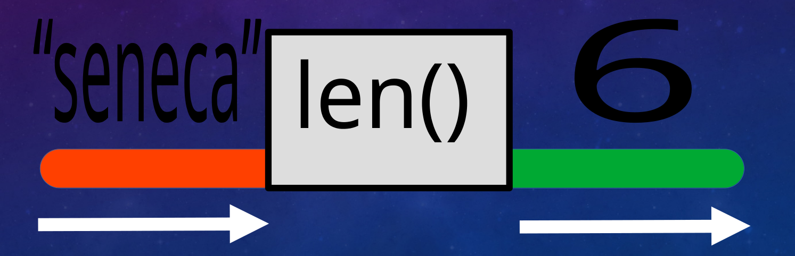

A function object refers to a named block of Python code, designed to
perform one specific task and only runs when it’s called, not defined.
In this way, code can be reused easily. This is called modular
programming.
You’ve already used builtin functions that are provided by
the Python language.
x =input("Enter your name: ")print(x)y =len("seneca")
Functions: Visualization
Consider the len() function: we give it a string or list
and it returns an integer equal to the length of the input. We
don’t need to see the code to understand how to use it. And so
we can save time by using functions.

len() is a black box: stuff goes in,
things come out.
Functions: Visualization
Consider the len() function: we give it a string or list
and it returns an integer equal to the length of the input. We
don’t need to see the code to understand how to use it. And so
we can save time by using functions.
y = len("seneca")
Defining Your Own Functions
Functions are composed of two parts:
Function definition (function name and parentheses)
Body (defined by an indent level)
The body must contain something in order not to
cause a Syntax Error. If you need to, you can simply use
pass as a placeholder.
>>>> school("Eric") # 1 arg, default for 2nd arg is used
Eric attends Seneca
>>>> school("Hong", "Centennial") # 2 args, default is overridden
Hong attends Centennial
Functions: Parameters
Parameters are what we set up in the function definition.
Each argument is passed into the body of the function and assigned a
parameter name. Once the function stops, those parameter values are lost
and the memory is freed up.
def get_age(year): now =2024 age = now - yearprint('You are '+str(age) +' years old.'')
>>>> get_age(1991)
You are 33 years old.
>>>> print(now)
Error: Varible 'now' is not defined!
Functions: Return Values
One thing to keep in mind is that any parameters inside a function
aren’t available to the rest of the code (not a global variable). If you
do work inside the function and want to use it elsewhere, you have to
return the value.
Note: as soon as your code encounters a
return, it will stop running the function
immediately!
# Function Definitiondef calculate_age(): age =2024-1970return age # stops the functionprint("We will never reach this line")# Main Program - Run Functionprint(calculate_age()) # Prints "54"
Functions: Arguments And Return Values
You can combine both to create an incredibly useful function. This
example returns a True or False.
def can_drive(year): age =2024- yearif age >=16: # legal age to get G1 license in OntarioreturnTrueelse:returnFalse# Main Program - Run Functionx =input("Enter your date of birth: ")if can_drive(x):print("You are old enough to drive.")
Function Annotations
Generally Python functions will accept any datatype, even
when this is going to cause an issue.
You can choose to add annotations to your function
definition, which will suggest datatypes for parameters and return
values.
Note: Depending on your configuration, breaking
guidelines won’t stop your code. Consider these like comments.
def is_even(number: int) -> bool:
"accepts an integer, and returns True or False"
...
Function Annotations
parameter annotation comes after variable:
return value annotation comes after ->
def student_grade(name: str, gpa: float) -> dict:
"Puts name and gpa into a dictionary"
...
int, float, list, dict, set, str, etc.
Some Guidelines For Creating Functions
Shorter functions are always better than longer functions.
Function names should be short: one verb only! 2-3 words!
In programming, we try to avoid redundancy. This means if
you have two blocks of code that are identical or very similar, you can
probably replace them with one function.
Functions can only return one thing. If your function is
returning more than one thing, it probably needs to be
two functions.
Scope
When we call a function, we pass in our arguments and associate them
with parameters. Parameters are considered local, that is, they
only exist inside of the function. Variables outside of functions are
called global variables.
Don’t access global variables inside functions!! Pass them in
as arguments if you need them! This will make your life
easier.
Scope: Don’t Do This If You Want To Enjoy Your Life
x =34def a_func(x, y): # local and global vars can have the same nameglobal x # don't do this z = x + y # what is this going to do?return za_func(12, 45)
Main Block: Why?
This is important for when your code is going to be
imported. Importing a python file will cause all the code to
run, which is not what we want!
# this is a file called func.pydef a_useful_func(): # this is what I want to use ...print("This is bad stuff")
>>>> import func
This is bad stuff
Main Block
A main block is useful here. It will run if you execute
func.py by itself, but will be ignored during imports.
# this is a file called func.pydef a_useful_func(): # this is what I want to use ...if__name__=="__main__":print("This is best practice")
Concept: List Object
A list object is a special datatype. It refers to a series
of items in a particular order, and each item in the list can be
accessed using an index.
mylist = ['seneca', 'ict', 'cns', 'cty']
mylist is the name of a list object which contains four
string objects: seneca, ict,
cns, and cty. Your list can contain any
combination of datatype you like: integers, floats, strings, other
lists, etc.
Accessing Items Inside a List
We can navigate through this list using its index number to call it,
a range, or whole list. Note: the last number in the slide tells us the
first element not included in the slice.
mylist = ['seneca', 'ict', 'cns', 'cty']print(mylist[0]) # This will print: senecaprint(mylist[1:3]) # This will print: ['ict', 'cns']print(mylist) # This will print ['seneca', 'ict', 'cns', 'cty']
If you’d like to go through all the items in a list (to use them in a
function, for example) you can do that as well.
mylist = ['seneca', 'ict', 'cns', 'cty']for item in mylist:print('This item is: '+ item)# This will print:# This item is seneca# This item is ict# This item is cns# This item is cty
For Loops
The For Loop is our second method of Iteration. The
first was the while loop.
There are two variables: the first is a special iterating
variable, which is singular. It contains each individual item, one
at a time.
The second is our iterable. This is the name of the variable
that we will iterate through.
Naming your variables correctly (singular and plural) will reduce
confusion when you are writing code.
menu = ['falafel', 'pizza', 'burger', 'coffee']healthy_choices = [] # empty listfor food in menu:if is_healthy(food): # this calls a function healthy_choices.append(food)else:print("We should probably avoid too much "+ food)